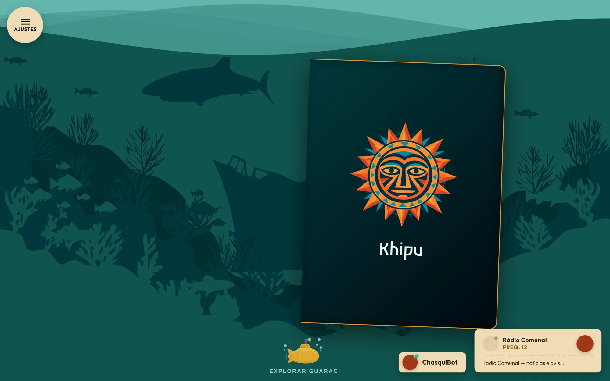
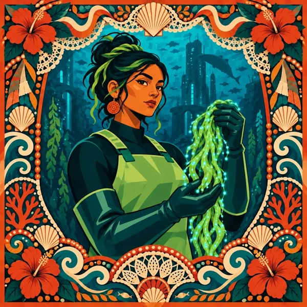
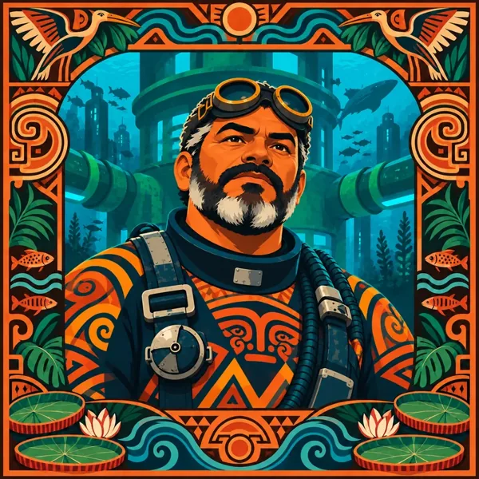
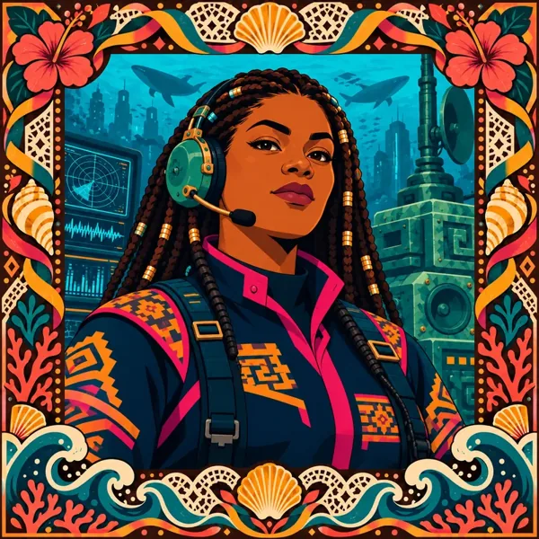
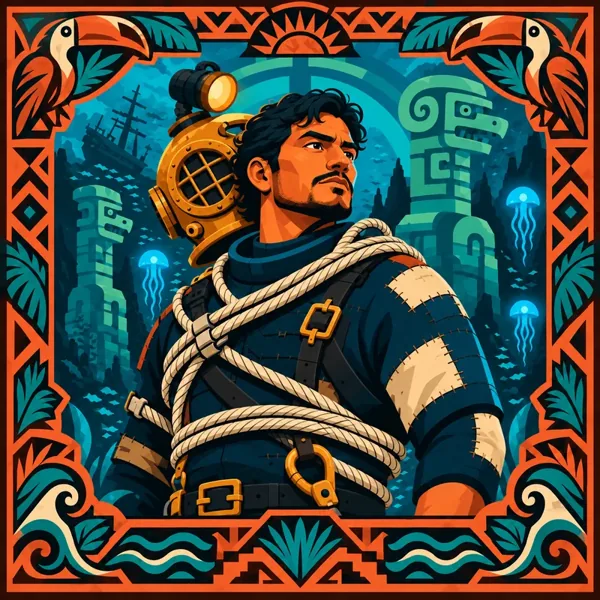
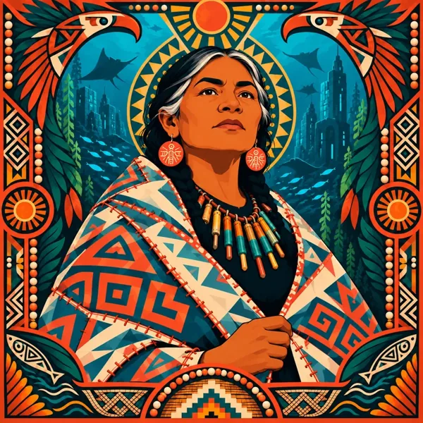
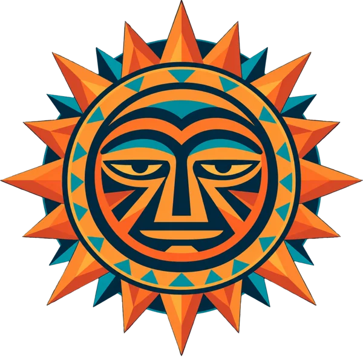
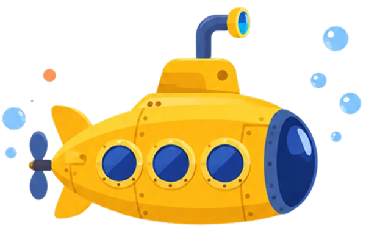

FIAP · VR Code Arena · NEXT 2026 · em grupo
Khipu
Um portal pra uma cidade que não existe, no fundo do mar. A gente inventou o mapa, os moradores, a rádio do bairro e até um idioma, o Atlante, que troca na hora.

O sol mora no fundo.
Experimente: a troca de idioma é uma das interações do portal.
Guaraci, bairro a bairro
Cada lugar da cidade ganhou ilustração, nome e função no portal. Toque para ampliar.
Quem mora lá







Por dentro do Khipu
Um idioma inventado
O Atlante mistura línguas da América Latina. A gramática vem do quéchua e cada morador fala com palavras de uma língua diferente: a Mestra Zilda usa náuatle, a Sueli do rádio usa guarani, o Tito do mergulho usa quéchua e aimará. A ideia era a cidade parecer feita de muitos povos. Tem glossário próprio e um script que avisa se sobrou alguma frase sem tradução.
ChasquiBOT
Chasqui era o mensageiro dos incas. Aqui ele é o assistente do portal: o morador pergunta e ele indica o lugar, a pessoa ou a seção certa. O motor de busca é nosso, com listas de palavras-chave, e um teste confere se ele acerta as frases de exemplo.
Rádio Comunal e Mural
Uma rádio do bairro tocando dentro do site e um mural de recados entre as cúpulas. Coisas que fazem um portal parecer habitado, não só informativo.
Movimento com cuidado
Peixes, algas e o submarino se mexem, mas toda seção animada respeita quem pediu menos movimento no sistema. Na abertura, o sol da cidade abre o olho enquanto o site carrega.
Minha parte no Khipu
- Tipografia e textos. Padronizei títulos, seções e pesos, e revisei os textos, inclusive os caracteres especiais do Atlante.
- Idiomas. A troca entre português e Atlante, os dialetos de cada morador e uma seção com outras línguas da América Latina.
- O Mundo. Indicadores explicados, cards maiores, mapa e bunker ilustrados no mesmo estilo dos habitantes e os tópicos virando perguntas que abrem com a resposta.
- Habitantes. Os 6 líderes com descrição e habilidades. Os turnos viraram as profundidades em que cada um trabalha.
- "Quem pode me ajudar agora?" Pesei IA contra palavras-chave, inclusive o cuidado com LGPD. O ChasquiBOT acabou respondendo por palavras-chave, com testes.
O pedido
Um portal pra uma cidade fictícia, com moradores espalhados por cúpulas no fundo do mar.
O que fez diferença
Tratar o site como um lugar de verdade: idioma próprio que troca na hora, rádio do bairro, mural de recados e um assistente, o ChasquiBOT.
Ferramentas
Projeto em grupo com Larissa Benedito e Mayla Motobe (Ctrl + People) · ver no ar · código